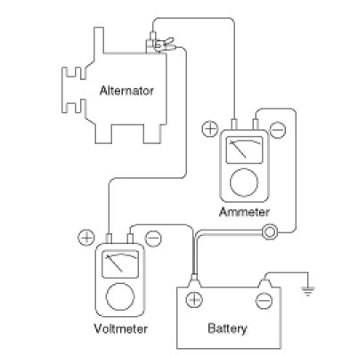
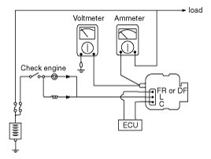

Component Tests and General Diagnostics
On-vehicle Inspection
CAUTION:
- First of all, check for DTCs. If a DTC is present, perform troubleshooting in accordance with the procedure for that DTC.
CAUTION:
- Check that the battery cables are connected to the correct terminals.
- Disconnect the battery cables when the battery is given a quick charge.
- Never disconnect the battery while the engine is running.
[General Inspection]
1. Check The Battery Terminals And Fuses
(1) Check that the battery terminals are not loose or corroded.
(2) Check the fuses for continuity.
2. Inspect Drive Belt
(1) Visually check the belt for excessive wear, frayed cords etc.
If any defect has been found, replace the drive belt.
NOTE:
- Cracks on the rib side of a belt are considered acceptable. If the belt has chunks missing from the ribs, it should be replaced.

3. Drive belt tension measurement and adjustment
4. Visually Check Alternator Wiring And Listen For Abnormal Noises
(1) Check that the wiring is in good condition.
(2) Check that there is no abnormal noise from the alternator while the engine is running.
5. Check Discharge Warning Light Circuit
(1) Warm up the engine and then turn it off.
(2) Turn off all accessories.
(3) Turn the ignition switch "ON". Check that the discharge warning light is lit.
(4) Start the engine. Check that the light is lit.
If the light does not go off as specified, troubleshoot the discharge light circuit.
[Electrical Specified Value Inspection]
1. Voltage Drop Test Of Alternator Output Wire
This test determines whether or not the wiring between the alternator "B" terminal and the battery (+) terminal is good by the voltage drop method.
(1) Preparation
A. Turn the ignition switch to "OFF".
B. Disconnect the output wire from the alternator "B" terminal. Connect the (+) lead wire of ammeter to the "B" terminal of alternator and the (-) lead wire of ammeter to the output wire. Connect the (+) lead wire of voltmeter to the "B" terminal of alternator and the (-) lead wire of voltmeter to the (+) terminal of battery.

(2) Test
A. Start the engine.
B. Turn on the headlamps and blower motor, and set the engine speed until the ammeter indicates 20A.
And then, read the voltmeter at this time.
(3) Result
A. The voltmeter may indicate the standard value.
Standard value :0.2V max
B. If the value of the voltmeter is higher than expected (above 0.2V max.), poor wiring is suspected. In this case check the wiring from the alternator "B" terminal to the battery (+) terminal. Check for loose connections, color change due to an over-heated harness, etc. Correct them before testing again.
C. Upon completion of the test, set the engine speed at idle.
Turn off the headlamps, blower motor and the ignition switch.
2. Output Current Test
This test determines whether or not the alternator gives an output current that is equivalent to the normal output.
(1) Preparation
A. Prior to the test, check the following items and correct as necessary.
Check the battery installed in the vehicle to ensure that it is good condition. The battery checking method is described in the section "Battery".
The battery that is used to test the output current should be one that has been partially discharged. With a fully charged battery, the test may not be conducted correctly due to an insufficient load.
Check the tension of the alternator drive belt. The belt tension check method is described in the section "Inspect drive belt".
B. Turn off the ignition switch.
C. Disconnect the battery ground cable.
D. Disconnect the alternator output wire from the alternator "B" terminal.
E. Connect a DC ammeter (0 to 150A) in series between the "B" terminal and the disconnected output wire. Be sure to connect the (-) lead wire of the ammeter to the disconnected output wire.
NOTE:
Tighten each connection securely, as a heavy current will flow. Do not rely on clips.
F. Connect a voltmeter (0 to 20V) between the "B" terminal and ground. Connect the (+) lead wire to the alternator "B" terminal and (-) lead wire to a good ground.
G. Attach an engine tachometer and connect the battery ground cable.
H. Leave the engine hood open.

(2) Test
A. Check to see that the voltmeter reads as the same value as the battery voltage. If the voltmeter reads 0V, and the open circuit in the wire between alternator "B" terminal and battery (+) terminal or poor grounding is suspected.
B. Start the engine and turn on the headlamps.
C. Set the headlamps to high beam and the heater blower switch to HIGH, quickly increase the engine speed to 2,500 rpm and read the maximum output current value indicated by the ammeter.
NOTE:
After the engine start up, the charging current quickly drops. Therefore, the above operation must be done quickly to read the maximum current value correctly.
(3) Result
A. The ammeter reading must be higher than the limit value. If it is lower but the alternator output wire is in good condition, remove the alternator from the vehicle and test it.
Limit value :60% of the voltage rate
NOTE:
The nominal output current value is shown on the nameplate affixed to the alternator body.
The output current value changes with the electrical load and the temperature of the alternator itself.
Therefore, the nominal output current may not be obtained. If such is the case, keep the headlamps on the cause discharge of the battery, or use the lights of another vehicle to increase the electrical load.
The nominal output current may not be obtained if the temperature of the alternator itself or ambient temperature is too high. In such a case, reduce the temperature before testing again.
B. Upon completion of the output current test, lower the engine speed to idle and turn off the ignition switch.
C. Disconnect the battery ground cable.
D. Remove the ammeter and voltmeter and the engine tachometer.
E. Connect the alternator output wire to the alternator "B" terminal.
F. Connect the battery ground cable.
3. Regulated Voltage Test
The purpose of this test is to check that the electronic voltage regulator controls voltage correctly.
(1) Preparation
A. Prior to the test, check the following items and correct if necessary.
Check that the battery installed on the vehicle is fully charged. The battery checking method is described in the section "Battery".
Check the alternator drive belt tension. The belt tension check method is described in the section "Inspect drive belt".
B. Turn ignition switch to "OFF".
C. Disconnect the battery ground cable.
D. Connect a digital voltmeter between the "B" terminal of the alternator and ground. Connect the (+) lead of the voltmeter to the "B" terminal of the alternator. Connect the (-) lead to good ground or the battery (-) terminal.
E. Disconnect the alternator output wire from the alternator "B" terminal.
F. Connect a DC ammeter (0 to 150A) in series between the "B" terminal and the disconnected output wire.
Connect the (-) lead wire of the ammeter to the disconnected output wire.
G. Attach the engine tachometer and connect the battery ground cable.
(2) Test
A. Turn on the ignition switch and check to see that the voltmeter indicates the following value.
Voltage:Battery voltage
If it reads 0V, there is an open circuit in the wire between the alternator "B" terminal and the battery and the battery (-) terminal.
B. Start the engine. Keep all lights and accessories off.
C. Run the engine at a speed of about 2,500 rpm and read the voltmeter when the alternator output current drops to 10A or less
(3) Result
A. If the voltmeter reading doesn't agree with the standard value, the voltage regulator or the alternator is faulty.
B. Upon completion of the test, reduce the engine speed to idle, and turn off the ignition switch.
C. Disconnect the battery ground cable.
D. Remove the voltmeter and ammeter and the engine tachometer.
E. Connect the alternator output wire to the alternator "B" terminal.
F. Connect the battery ground cable.